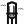
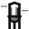
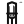
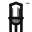

Addendum: ship-water-menu-clouds.svg -- shipped file + flank clouds, nod to the favicon heights (y=5.5 left, y=9 right)
16px, light row
17px, light row

24px, light row

32px, light row
16px, dark row
17px, dark row
24px, dark row
32px, dark row
Comparison: no clouds (shipped today) vs with clouds, at 17px
ship-water-menu.svg (no clouds)
ship-water-menu-clouds.svg
no clouds, dark
with clouds, dark
Rejected: the two-stroke gull, at 17 / 24 / 32 px (fails to resolve at every tested size)
17px, bird alone

24px, bird alone

32px, bird alone
 24px, dark row24px, dark row
24px, dark row24px, dark row ship-water-menu.svg (no clouds)
ship-water-menu.svg (no clouds)